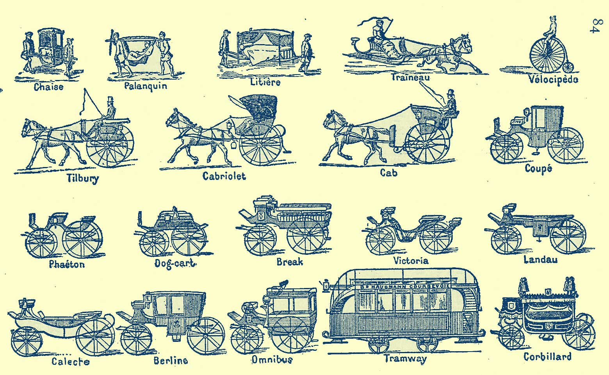

Romantic poems in their orginal languages
These are the poems I have added in their original languages so far. Please let me know if you'd like me to add another poem. I'd like this page to keep growing.
Gustavo Bécquer (Nameless Spirit)
Heinrich
Heine (A Young Man Loves a Maiden; The Silesian Weavers)
Victor Hugo (Et nox facta est) For the French, see http://libri.freenfo.net/4/4039144.html
Friederich Höderlin (Hyperions Schicksalslied) To retain the poem's unique formatting see: http://www.recmusic.org/lieder/get_text.html?TextId=8133
Giacomo Leopardi (The Infinite, To Himself, To Sylvia)
Gérard de Nerval (April, Awakening in the Carriage, Grandmother)
Novalis (Friederich von Hardenberg (Yearning for Death)
Gustavo Bécquer
V
Espíritu sin nombre,
indefinible esencia,
yo vivo con la vida
sin formas de la idea.
Yo nado en el vacío,
del sol tiemblo en la hoguera,
palpito entre las sombras
y floto con las nieblas.
Yo soy el fleco de oro
de la lejana estrella,
yo soy de la alta luna
la luz tibia y serena.
Yo soy la ardiente nube
que en el ocaso ondea,
yo soy del astro errante
la luminosa estela.
Yo soy nieve en las cumbres,
soy fuego en las arenas,
azul onda en los mares,
y espuma en las riberas.
En el laúd soy nota,
perfume en la violeta,
fugaz llama en las tumbas
y en las ruinas yedra.
Yo atrueno en el torrente
y silbo en la centella,
y ciego en el relámpago
y rujo en la tormenta.
Yo río en los alcores,
susurro en la alta yerba,
suspiro en la onda pura
y lloro en la hoja seca.
Yo ondulo con los átomos
del humo que se eleva
y al cielo lento sube
en espiral inmensa.
Yo, en los dorados hilos
que los insectos cuelgan,
me mezco entre los árboles
en la ardorosa siesta.
Yo corro tras las ninfas
que en la corriente fresca
del cristalino arroyo
desnudas juguetean.
Yo, en bosque de corales
que alfombran blancas perlas,
persigo en el océano
las náyades ligeras.
Yo, en las cavernas cóncavas
do el sol nunca penetra,
mezclándome a los gnomos,
contemplo sus riquezas.
Yo busco de los siglos
las ya borradas huellas,
y sé de esos imperios
de que ni el nombre queda.
Yo sigo en raudo vértigo
los mundos que voltean,
y mi pupila abarca
la creación entera.
Yo sé de esas regiones
a do un rumor no llega,
y donde informes astros
de vida un soplo esperan.
Yo soy sobre el abismo
el puente que atraviesa,
yo soy la ignota escala
que el cielo une a la tierra.
Yo soy el invisible
anillo que sujeta
el mundo de la forma
al mundo de la idea.
Yo en fin soy ese espíritu,
desconocida esencia,
perfume misterioso
de que es vaso el poeta.
Heinrich Heine
Ein Jungling liebt ein Madchen
LYRISCHES INTERMEZZO XXXIX
Ein Jüngling liebt ein Mädchen,
Die hat einen andern erwählt;
Der andre liebt eine andre,
Und hat sich mit dieser vermählt.
Das Mädchen heiratet aus Ärger
Den ersten besten Mann,
Der ihr in den Weg gelaufen;
Der Jüngling ist übel dran.
Es ist eine alte Geschichte,
Doch bleibt sie immer neu;
Und wem sie just passieret,
Dem bricht das Herz entzwei.
http://www.staff.uni-mainz.de/pommeren/Gedichte/BdL/Lyr-39.html
see also Art song text page for this poem http://www.recmusic.org/lieder/get_text.html?TextId=757
Die schlesischen Weber
Im düstern Auge keine Träne,Ein Fluch dem Gotte, zu dem wir gebeten
In Winterskälte und Hungersnöten;
Wir haben vergebens gehofft und geharrt -
Er hat uns geäfft und gefoppt und genarrt -
Wir weben, wir weben!
Ein Fluch dem König, dem König der Reichen,
Den unser Elend nicht konnte erweichen,
Der den letzten Groschen von uns erpreßt
Und uns wie die Hunde erschießen läßt -
Wir weben, wir weben!
Ein Fluch dem falschen Vaterlande,
Wo nun gedeihen Schmach und Schande,
Wo jede Blume früh geknickt,
Wo Fäulnis und Moder den Wurm erquickt -
Wir weben, wir weben!
Das Schiffchen fliegt, der Webstuhl kracht,
Wir weben emsig Tag und Nacht -
Altdeutschland, wir weben dein Leichentuch,
Wir weben hinein den dreifachen Fluch,
Wir weben, wir weben!
(eingesandt von Axel Hoeschen: axel.hoeschen@bonding.de)
Giacomo Leopardi L'infinito (Italian; The Infinite)
Sempre caro mi fu quest'ermo colle
E questa siepe che da tanta parte
De'll ultimo orrizonte il guarde esclude.
Ma sedendo e mirando interminati
Spazi di là da quella, e sovrumani
Silenzi, e profondissima quiete,
Io nel pensier mi fingo, ove per poco
Il cor non si spaura. E come il vento
Odo stormir tra queste piante, io quello
Infinito silenzio a questa voce
Vo comparando; e mi sovvien l'eterno,
E le morte stagioni, e la presente
E viva, e'l suon di lei. Così tra questa
Immensità s'annega il pensier mio:
E'l naufragar m'è dolce in questo mare.
I found the original text on a fabulous little site where different English translations are compared, much as we will do with Baudelaire's Au Lecteur.
http://www.textetc.com/workshop/wt-leopardi-1.html
Giacomo Leopardi - A Silvia (To Sylvia) Canti XXI
Silvia, rimembri ancora
Quel tempo della tua vita mortale,
Quando beltà splendea
Negli occhi tuoi ridenti e fuggitivi,
E tu, lieta e pensosa, il limitare 5
Di gioventù salivi?
Sonavan le quiete
Stanze, e le vie dintorno,
Al tuo perpetuo canto,
Allor che all'opre femminili intenta 10
Sedevi, assai contenta
Di quel vago avvenir che in mente avevi.
Era il maggio odoroso: e tu solevi
Così menare il giorno.
Io gli studi leggiadri 15
Talor lasciando e le sudate carte,
Ove il tempo mio primo
E di me si spendea la miglior parte,
D'in su i veroni del paterno ostello
Porgea gli orecchi al suon della tua voce, 20
Ed alla man veloce
Che percorrea la faticosa tela.
Mirava il ciel sereno,
Le vie dorate e gli orti,
E quinci il mar da lungi, e quindi il monte. 25
Lingua mortal non dice
Quel ch'io sentiva in seno.
Che pensieri soavi,
Che speranze, che cori, o Silvia mia!
Quale allor ci apparia 30
La vita umana e il fato!
Quando sovviemmi di cotanta speme,
Un affetto mi preme
Acerbo e sconsolato,
E tornami a doler di mia sventura. 35
O natura, o natura,
Perché non rendi poi
Quel che prometti allor? perché di tanto
Inganni i figli tuoi?
Tu pria che l'erbe inaridisse il verno, 40
Da chiuso morbo combattuta e vinta,
Perivi, o tenerella. E non vedevi
Il fior degli anni tuoi;
Non ti molceva il core
La dolce lode or delle negre chiome, 45
Or degli sguardi innamorati e schivi;
Né teco le compagne ai dì festivi
Ragionavan d'amore.
Anche peria fra poco
La speranza mia dolce: agli anni miei 50
Anche negaro i fati
La giovanezza. Ahi come,
Come passata sei,
Cara compagna dell'età mia nova,
Mia lacrimata speme! 55
Questo è quel mondo? questi
I diletti, l'amor, l'opre, gli eventi
Onde cotanto ragionammo insieme?
Questa la sorte dell'umane genti?
All'apparir del vero 60
Tu, misera, cadesti: e con la mano
La fredda morte ed una tomba ignuda
Mostravi di lontano.
http://it.wikisource.org/wiki/Canti_(Leopardi)/A_Silvia
Giacomo Leopardi - A Se Stesso (To Himself)
Canti XXVIII
A se stesso
Or poserai per sempre,
stanco mio cor. Perì l'inganno estremo,
Ch'eterno io mi credei. Perì. Ben sento,
In noi di cari inganni,
Non che la speme, il desiderio è spento. 5
Posa per sempre. Assai
Palpitasti. Non val cosa nessuna
I moti tuoi, né di sospiri è degna
La terra. Amaro e noia
La vita, altro mai nulla; e fango è il mondo. 10
T'acqueta omai. Dispera
L'ultima volta. Al gener nostro il fato
Non donò che il morire. Omai disprezza
Te, la natura, il brutto
Poter che, ascoso, a comun danno impera, 15
E l'infinita vanità del tutto.
http://it.wikisource.org/wiki/Canti_(Leopardi)/A_se_stesso
Gérard de Nerval Le réveil en voiture (Awakening in the Carriage)
Voici ce que je vis : Les arbres sur ma route
Fuyaient mêlés, ainsi qu'une armée en déroute,
Et sous moi, comme ému par les vents soulevés,
Le sol roulait des flots de glèbe et de pavés !
Des clochers conduisaient parmi les plaines vertes
Leurs hameaux aux maisons de plâtre, recouvertes
En tuiles, qui trottaient ainsi que des troupeaux
De moutons blancs, marqués en rouge sur le dos !
Et les monts enivrés chancelaient, - la rivière
Comme un serpent boa, sur la vallée entière
Étendu, s'élançait pour les entortiller...
- J'étais en poste, moi, venant de m'éveiller!
(Recueil : Odelettes) http://www.inlibroveritas.net/lire/oeuvre753-page1.html#page
Late 19th Century Modes of Transportation in France taken from the Dictionary of P.Larousse, From F. Berger’s (1896) French Method, François Berger, The French Academy; New York; 1896; pp. 84-85.

Avril (April)
Déjà les beaux jours, - la poussière,
Un ciel d'azur et de lumière,
Les murs enflammés, les longs soirs ; -
Et rien de vert : - à peine encore
Un reflet rougeâtre décore
Les grands arbres aux rameaux noirs !
Ce beau temps me pèse et m'ennuie.
- Ce n'est qu'après des jours de pluie
Que doit surgir, en un tableau,
Le printemps verdissant et rose,
Comme une nymphe fraîche éclose
Qui, souriante, sort de l'eau.
(Recueil : Odelettes) http://www.inlibroveritas.net/lire/oeuvre727-page1.html#page
La Grand-mère (Grandmother)
Voici trois ans qu'est morte ma grand'mère,
La bonne femme, - et, quand on l'enterra,
Parents, amis, tout le monde pleura
D'une douleur bien vraie et bien amère.
Moi seul j'errais dans la maison, surpris
Plus que chagrin ; et, comme j'étais proche
De son cercueil, - quelqu'un me fit reproche
De voir cela sans larmes et sans cris.
Douleur bruyante est bien vite passée :
Depuis trois ans, d'autres émotions,
Des biens, des maux, - des révolutions, -
Ont dans les murs sa mémoire effacée.
Moi seul j'y songe, et la pleure souvent ;
Depuis trois ans, par le temps prenant force,
Ainsi qu'un nom gravé dans une écorce,
Son souvenir se creuse plus avant !
(Recueil : Odelettes) http://www.inlibroveritas.net/lire/oeuvre745-page1.html#page
Novalis (Friederich von Hardenberg
Sehnsucht nach dem Tode (Yearning for Death)
Hinunter in der Erde Schoß,
Weg aus des Lichtes Reichen,
Der Schmerzen Wut und wilder Stoß
Ist froher Abfahrt Zeichen.
Wir kommen in dem engen Kahn
Geschwind am Himmelsufer an.
Gelobt sei uns die ew'ge Nacht,
Gelobt der ew'ge Schlummer.
Wohl hat der Tag uns warm gemacht
Und welk der lange Kummer.
Die Lust der Fremde ging uns aus,
Zum Vater wollen wir nach Haus.
Was sollen wir auf dieser Welt
Mit unsrer Lieb und Treue.
Das Alte wird hintangestellt,
Was soll uns dann das Neue.
Oh! einsam steht und tiefbetrübt,
Wer heiß und fromm die Vorzeit liebt.
Die Vorzeit, wo die Sinne licht
In hohen Flammen brannten,
Des Vaters Hand und Angesicht
Die Menschen noch erkannten,
Und hohen Sinns, einfältiglich
Noch mancher seinem Urbild glich.
Die Vorzeit, wo noch blütenreich
Uralte Stämme prangten
Und Kinder für das Himmelreich
Nach Qual und Tod verlangten.
Und wenn auch Lust und Leben sprach,
Doch manches Herz für Liebe brach.
Die Vorzeit, wo in Jugendglut
Gott selbst sich kundgegeben
Und frühem Tod in Liebesmut
Geweiht sein süßes Leben.
Und Angst und Schmerz nicht von sich trieb,
Damit er uns nur teuer blieb.
Mit banger Sehnsucht sehn wir sie
In dunkle Nacht gehüllet,
In dieser Zeitlichkeit wird nie
Der heiße Durst gestillet.
Wir müssen nach der Heimat gehn,
Um diese heil'ge Zeit zu sehn.
Was hält noch unsre Rückkehr auf,
Die Liebsten ruhn schon lange.
Ihr Grab schließt unsern Lebenslauf,
Nun wird uns weh und bange.
Zu suchen haben wir nichts mehr -
Das Herz ist satt - die Welt ist leer.
Unendlich und geheimnisvoll
Durchströmt uns süßer Schauer -
Mir deucht, aus tiefen Fernen scholl
Ein Echo unsrer Trauer.
Die Lieben sehnen sich wohl auch
Und sandten uns der Sehnsucht Hauch.
Hinunter zu der süßen Braut,
Zu Jesus, dem Geliebten -
Getrost, die Abenddämmrung graut
Den Liebenden, Betrübten.
Ein Traum bricht unsre Banden los
Und senkt uns in des Vaters Schoß.